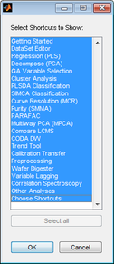
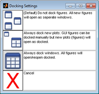

Table of Contents | Previous | Next
Workspace Browser Preferences
When Solo first opens, it opens with a default set of Shortcuts for all of the Analysis tools. You can specify which Shortcuts are to be displayed in your Workspace Browser. Finally, you can also specify Windows docking settings which determine how interfaces and data figures can be moved and resized. See:
To specify the Workspace Browser Shortcut icons
| 1.
|
Do one of the following:
|
- Click Choose Shortcut item from the Tools area.
|
- On the Workspace Browser menu, click Edit > Options > Workspace Shortcuts.
|
- The Select Shortcuts to Show dialog box opens. By default, all Shortcut icons are selected.
- Select Shortcuts to Show dialog box
- 
| 2.
|
Clear the selections for the Shortcut icons that you do not want to show in the Workspace Browser, and then click OK.
|
- The Select Shortcuts to Show dialog box closes and you return to the Workspace Browser. Any changes that you made are effective immediately.
To edit the Workspace Browser options
Note: For a detailed discussion about the Options dialog box, see Options dialog box.
Workspace Browser options affect the display properties for the Workspace Browser. Currently you can adjust the width given to the workspace variable name and set the remote automation server behavior.
| 1.
|
On the Workspace Browser menu, click Edit > Options > Workspace Browser options.
|
- The Options dialog box for the Workspace Browser window opens.
| 2.
|
Modify the value for any option, and then click OK.
|
- The Options dialog box closes and you return to the Workspace Browser. Any changes that you made are effective immediately.
To specify the Window docking settings
By default, when you first open Solo, every data figure and interface in Solo is a floating window, which is a window that you can drag to any position on your desktop. You can also resize a floating window. You can select different Window docking settings to change the floating behavior of data figures, interfaces, or both.
| 1.
|
On the Workspace Browser main menu, click Edit > Options > Window Docking Settings.
|
- The Docking Settings dialog box opens. The first docking setting-All data figures and interfaces open as separate windows-is selected by default.
- Docking Settings dialog box
- 
| 2.
|
To select a different Window docking setting, click the setting.
|
- The Docking Settings dialog box closes and you return to the Workspace Browser. The new docking setting is effective after you close and reopen a window.